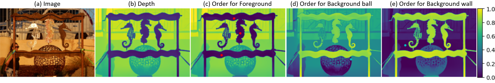
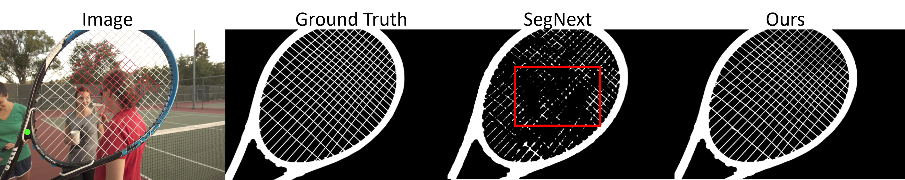
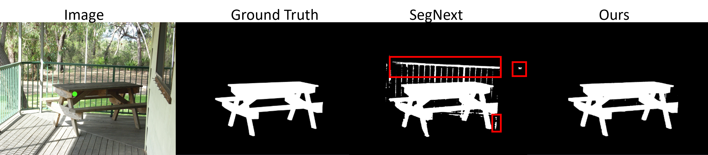
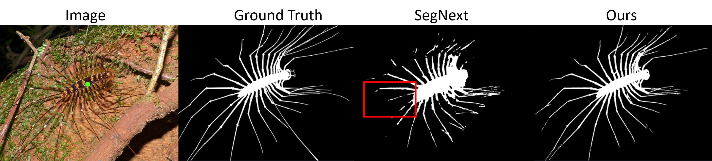

Methods
By calculating the relative depth between each point in the image and the user prompt's location, we create order map, to effectively separate the prompt-selected object with others.

With the help of order map, it is easy to use prompt click to separate objects. In (c), the foreground frame is fully separated from the background, and in (d), the background ball is clearly distinguished with just a negative click. (Red dots are positive clicks, blue dots are negative clicks, darker means closer to prompt-selected object, while lighter areas are farther to prompt-selected object)
Results
(1) Multi-clicks result comparison wtih SegNext (current SOTA) with Ours:


(2) One click result comparison wtih SegNext (current SOTA) with Ours:


